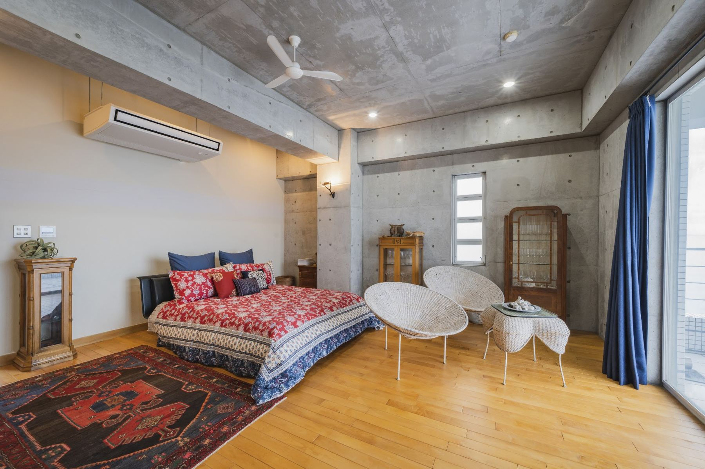
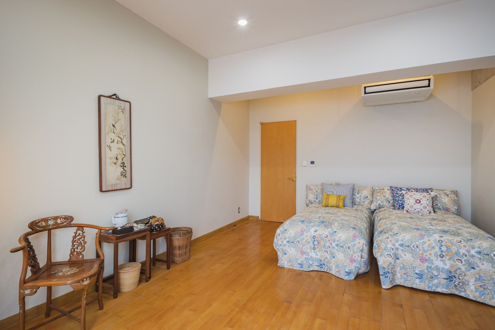
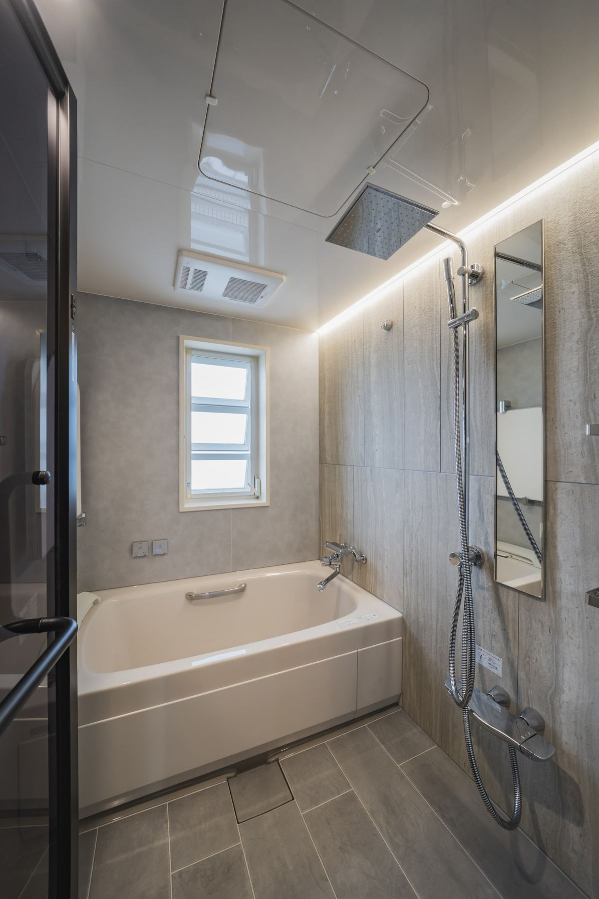

RESORT ・ FLOOR PLAN
在4樓生活，在5樓入眠。
面海側整面延展著露台的兩層樓宅邸。4樓是客廳與主臥，5樓有四間臥室。房間名稱取自窗外展開的瀨戶內群島。
客廳、臥室等主要生活空間
玄關、衛浴與廚房等
露台、陽台與中庭
機房等（禁止進入）
INTERACTIVE FLOOR PLAN
點擊房間，看看裡面。
將游標移至平面圖的房間（手機請點擊），該房間的照片、影片與說明就會顯示在右側。4樓與5樓可用按鈕切換。
4F ・ ROOM BY ROOM


照片待拍


照片待拍
照片待拍

照片待拍
照片待拍
5F ・ ROOM BY ROOM




照片待拍



照片待拍


1F ・ ARRIVAL


照片待拍


標示「照片待拍」的欄位，照片到位後即會替換。1樓為專用停車場，可搭電梯直達4樓。※平面圖僅供示意，可能與實際尺寸、形狀有所差異。